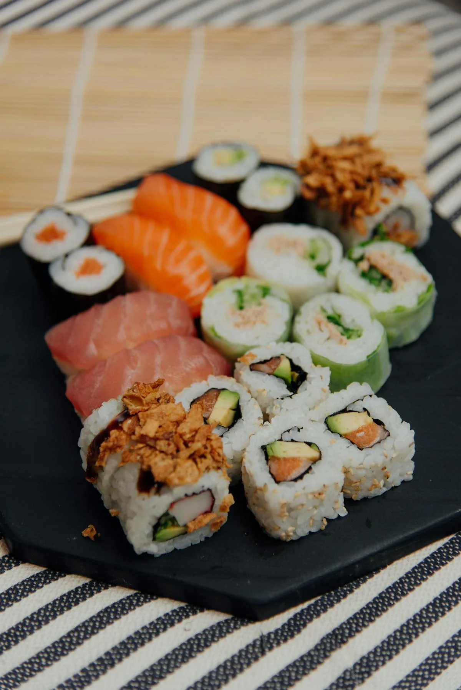

Sushi Recipe

Description
California rolls are a popular type of sushi that originated in the U.S. as a sushi alternative using cooked seafood.
They’re made with imitation crab, avocado, and cucumber, wrapped in seaweed and sushi rice, and often topped with sesame seeds.
These rolls are easy to make at home with a bamboo sushi mat and a little patience.
They’re a great introduction to sushi for beginners and are both refreshing and satisfying.
Ingredients
- 2 cups sushi rice
- 2 1/2 cups water
- 1/3 cup rice vinegar
- 2 tablespoons sugar
- 1 teaspoon salt
- 1 package imitation crab sticks
- 1 ripe avocado, sliced
- 1 cucumber, julienned
- 4 sheets of nori (seaweed)
- Toasted sesame seeds
- Soy sauce for dipping
- Bamboo sushi mat (optional but helpful)
Steps
- Rinse and cook the sushi rice with water, then let it cool slightly.
- Mix rice vinegar, sugar, and salt, and stir into warm rice.
- Place a sheet of plastic wrap over a bamboo sushi mat and put one nori sheet on top.
- Wet your hands and press a thin layer of rice over the nori.
- Sprinkle sesame seeds on top and flip the sheet over.
- Place crab sticks, avocado, and cucumber in a line across the nori.
- Use the mat to roll the sushi tightly away from you.
- Slice the roll into 6–8 pieces with a sharp, wet knife.
- Serve with soy sauce on the side.
Home Page